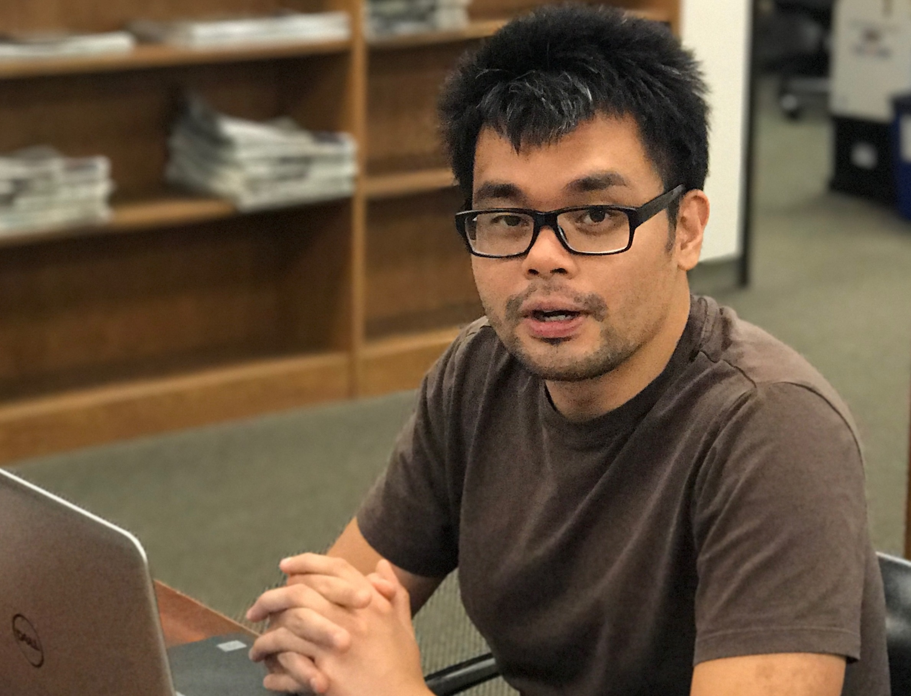

CookieCoders was founded the early 2017 by Jason Plojo, Aaron Pham, and Ahmed Alsadiq as a way to helppeople develop software solutions for individuals and companies. Ahmed Alsadiq is a co-founder of CookieCoders and is in charge of the public outreach arm of the organization. Having worked in an elementary school as Information Technology officer for 5 years he observed a lot of at risk youth not getting attention to develop any technical skills to help them succeed in their life. He also managed to gain skills to create programs in order to education students on basic concepts he learned as a Computer Science student at the California State University Long beach. His goal is to get these students on a path to go into the tech world and make a name for themselves and to foster their creativity.
Please know that this program is a 7 day commitment. Courses and instructions can be modified based on the level of the student. Any necessary preparations needs to be notified beforehand in the application so that accomidations can be made. Our instructors are very flexible if any of the students have learning disabilities or special needs. Please email all applications to CookieCoders@hr.org by June 2nd, 2017. We hope to see you at CookieCoders!